总览：动线与原则
调色师不是「从左到右点一遍图标」，而是反复回答同一串问题
达芬奇调色页功能极多，新手最容易陷入「每个面板都拧一点」。专业动线更像一条流水线：先让信号干净、坐标系正确，再谈好看。
白平衡在技术 LUT 之前（立轴）；串行打底、并行纠偏（节点结构）；示波器是裁判（Parade 管白平衡，Waveform 管曝光）。工具只是旋钮，意图和工位才决定对不对。
达芬奇侧
调色是主业：独立 Color 页、节点图、工业级二级与色彩管理。适合当调色当主活、多机匹配、复杂 Look。
对照 FCP
调色是剪辑附属：效果堆栈模拟 LUT 前后。要严格「LUT 前白平衡」须用 Custom LUT，勿用钉死的 Camera LUT。
工作台：先打开该看的面板
右上角五个开关，决定你今天怎么工作
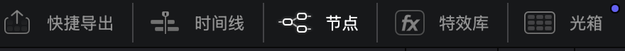
| 按钮 | 调色师怎么用 |
|---|---|
| 快捷导出 | 快速出片验证监看/客户预览，不必每次进完整交付页 |
| 时间线 | 换镜头、看片段范围；一级调完用它跳下一条 |
| 节点 | 你的流水线画布——几乎全程开着 |
| 特效库 | 需要 OCIO、去色带、物体移除等时再开，拖到节点 |
| 光箱 | 网格浏览整条片，挑锚点镜头、对白、统一 Look |
开项目第一件事不是拧色轮，而是：时间线就位 → 节点可见 → 示波器打开。光箱留给「整场统一」阶段，不要一开始就陷进单镜细节。
节点：调色的流水线，不是滤镜列表
绿点走画面，蓝点走蒙版；顺序即工位
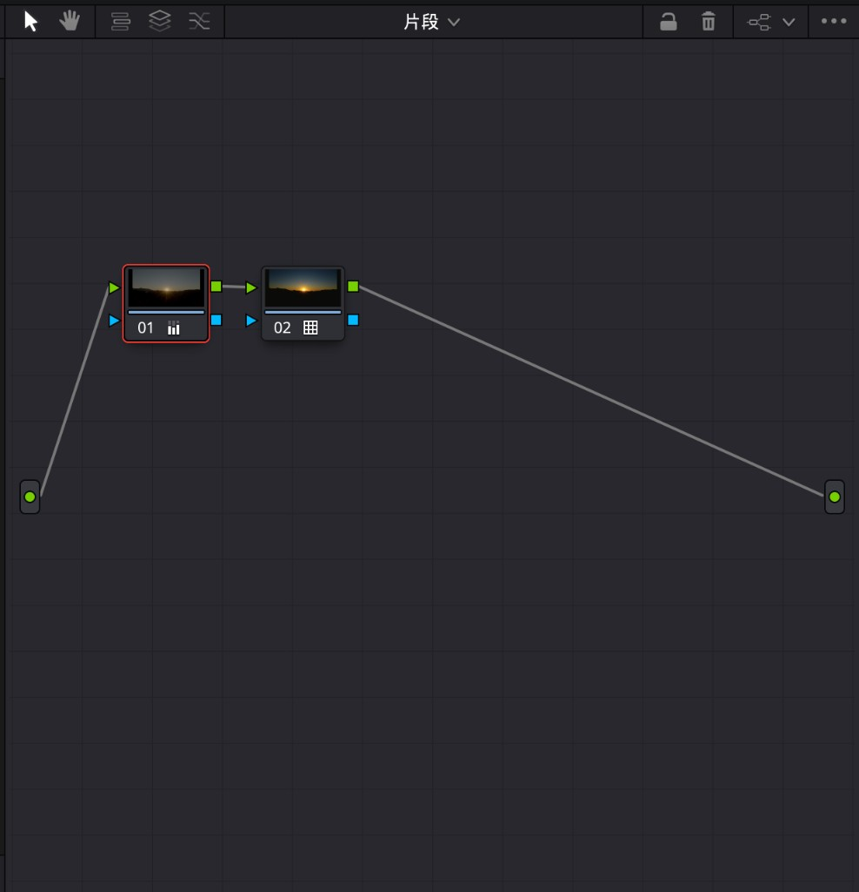
专业习惯是一事一节点（或一小段职责），方便开关对比、粘贴到同场镜头、导出静帧节点图复用：
- 串行：线性流程——还原 → 变换 → 风格，后级吃前级结果。
- 并行：同源分流——例如整体走冷的同时，并行节点把石板/肤色暖色保护回来，避免串行互相污染。
FCP 用效果堆栈自上而下模拟同一逻辑；达芬奇用节点把「工位」画成图，可并行、可复用、可键传递——这是调色上限差异的根源之一。
清理与构图：脏信号不要带进校色
先干净、再立轴；提亮会放大一切噪点与瑕疵
特效库：修复与色彩管理插件
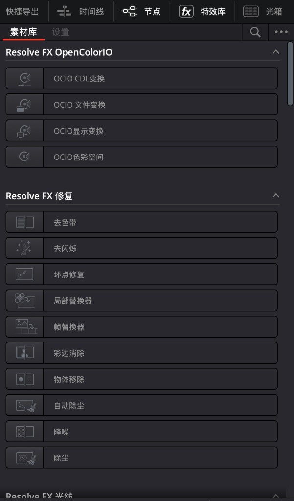
运动特效：时域 / 空域降噪
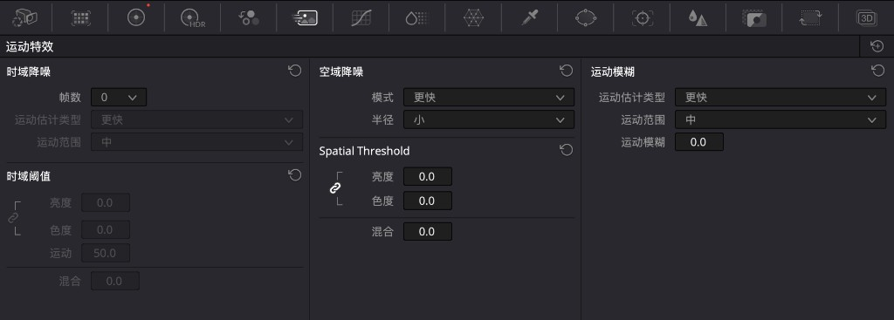
| 块 | 作用 | 注意 |
|---|---|---|
| 时域降噪 | 清「闪」的噪 | 帧数越大越干净，越易拖影、越吃 GPU |
| 空域降噪 | 收颗粒感 | 与时域搭配；混合滑块可减半力度 |
| 运动模糊 | 风格化拖影 | 不是降噪 |
大小 · 输入大小：在调色页 reframing
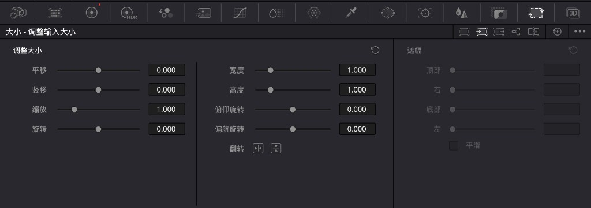
清理节点可单独开关对比「有无降噪」。预览卡时先关 NR，导出再开。构图问题尽量在输入大小解决，别把歪地平线留到创意阶段硬修。
一级立轴：白平衡与曝光基准
这一步回答：中性在哪、黑白该落在哪——必须在技术 LUT 之前
白平衡的本质是通道增益；在 Log 域里它表现为每通道的 Offset。目标是把本该灰的东西推回中性轴。裁判是 RGB Parade，不是「看起来舒服一点」。
有色卡：色彩匹配
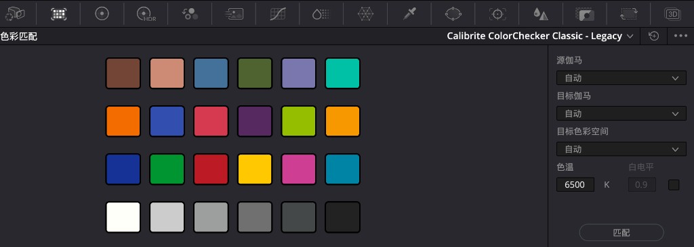
无色卡：一级校色条 / 色轮
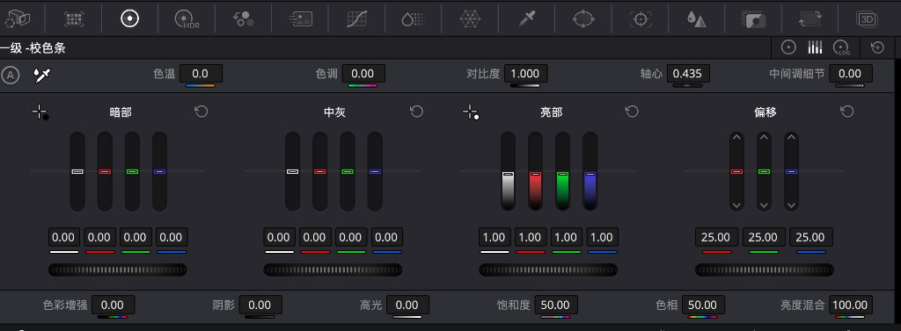
| 控件 | 一级职责 |
|---|---|
| 吸管 / 色温·色调 | 白平衡主力（点中性灰/白） |
| 偏移 Offset | Log 域全局通道平移 ≈ 增益语义 |
| 暗部 / 中灰 / 亮部 | 分区曝光与轻度分区染色（勿用来「补」全局色偏） |
| 对比度 + 轴心 | 以中灰为支点拉开反差 |
LUT 前后工位（达芬奇 & FCP 同一原则）
FCP：勿用 Camera LUT（钉死在最前）；用 Custom LUT，并把 Color Adjustments 拖到其上方，才能实现 LUT 前立轴。
一级节点调完，先 Bypass 对比「只校正 vs 加风格」。轴没立正之前，后面所有饱和与染色都在歪坐标系里跳舞——这是脏灰、修不齐高光色偏的根源。
影调塑形：拉开层次，而不是「再加一点对比」
HDR 轮按亮度分区；曲线做精确映射与哑光
HDR 校色轮：分区光感
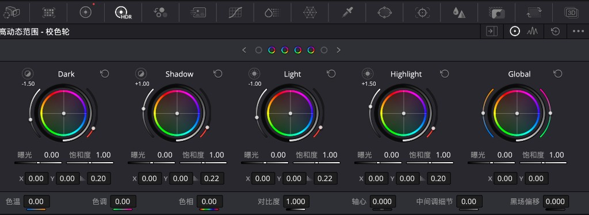
相对一级 Lift–Gamma–Gain，HDR 轮重叠更少、边界可调。阴天园林一类素材常：降 Shadow/Light，抬 Highlight 保住光感，再窗口分区。
曲线 · 自定义：影调的精密表
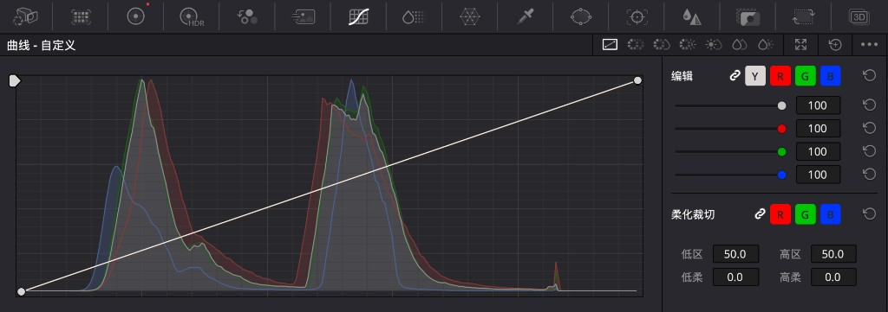
何时用 HDR 轮
要快速按亮度带塑光、拉开高光层次、分区曝光手感像「拧光」。
何时用曲线
要钉住某灰阶、做哑光样条、通道级分段染色；精度优先。
二级分区：只改该改的那一块
选区三件套：限定器（色）· 窗口（形）· 跟踪（动）· 键（力度）
HSL 限定器：按颜色属性抠选
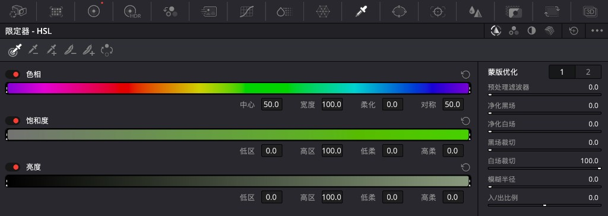
窗口：按空间形状圈选
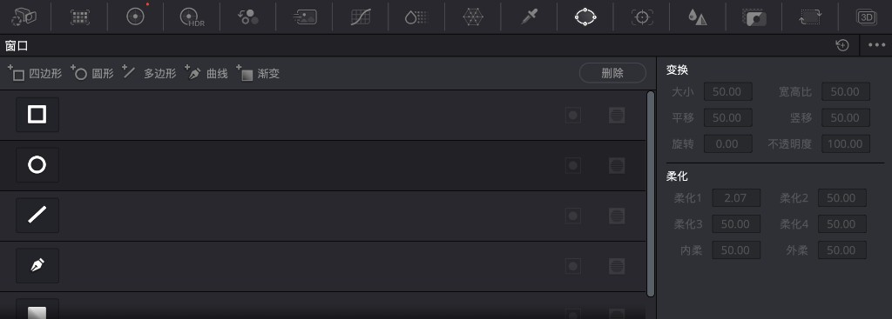
跟踪器：让窗口跟人走
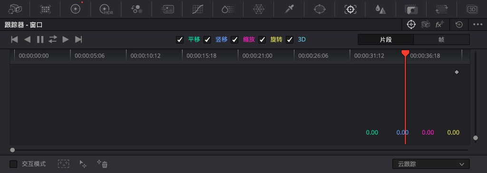
键：蒙版的增益与软硬
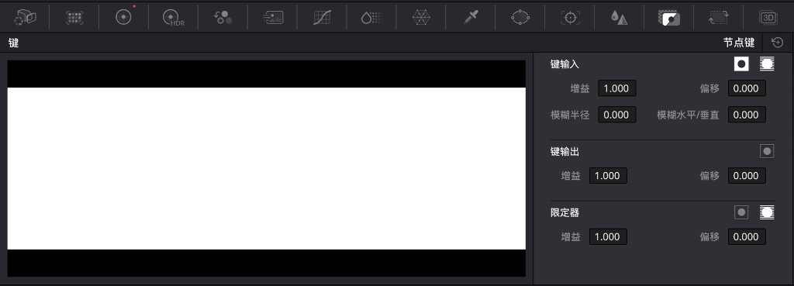
按色相整列调：色彩切片器
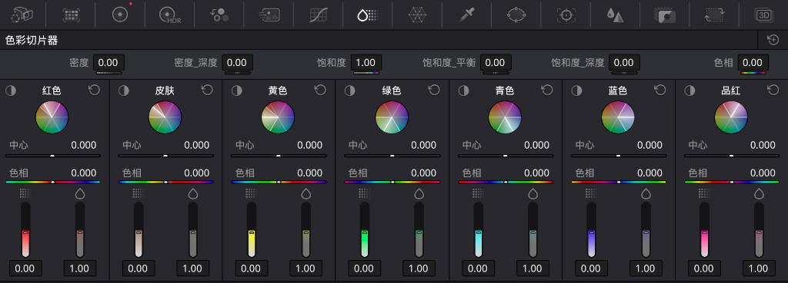
在色度图上搬颜色：色彩扭曲器
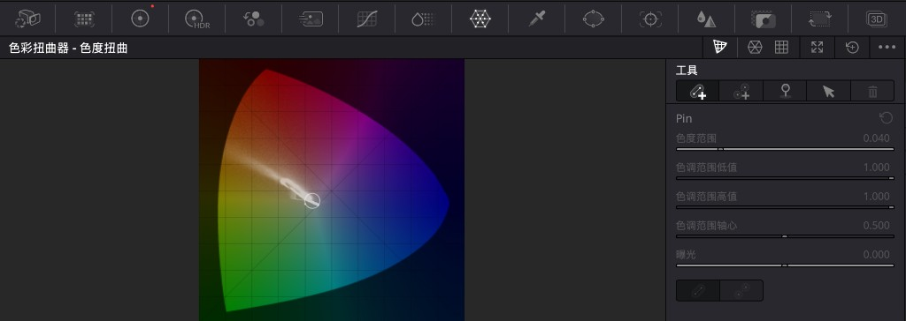
同色物体 → 限定器；光区/暗角/半边天 → 窗口（+跟踪）；整类色相收艳 → 切片器；某一坨颜色要挪到那边 → 扭曲器；力度与软边 → 键面板。
质感与通道：防滤镜感、控清晰度
颜色关系与锐度，往往比「再加饱和」更能决定成品质感
RGB 混合器：改通道矩阵
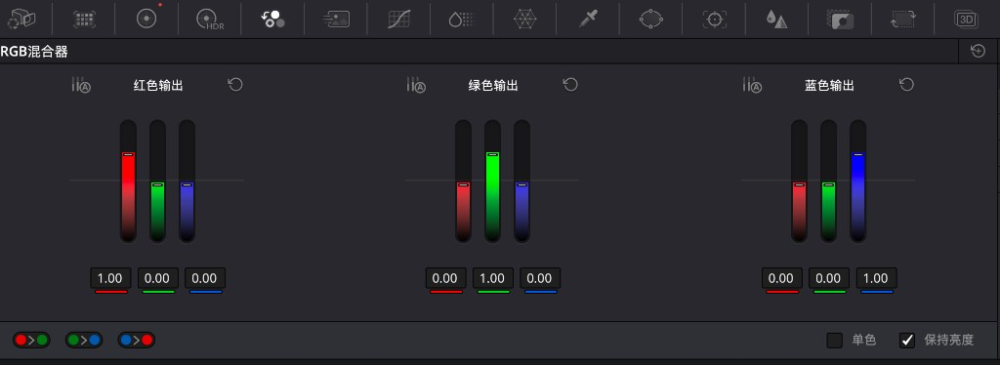
模糊：柔化 / 锐化 / 雾化
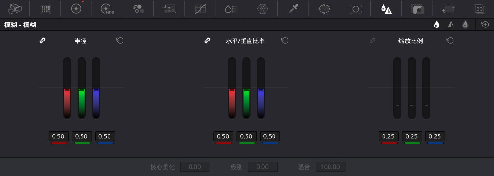
动态与交付
参数随时间变；最后用光箱统一、快捷导出验证
关键帧：动态调色
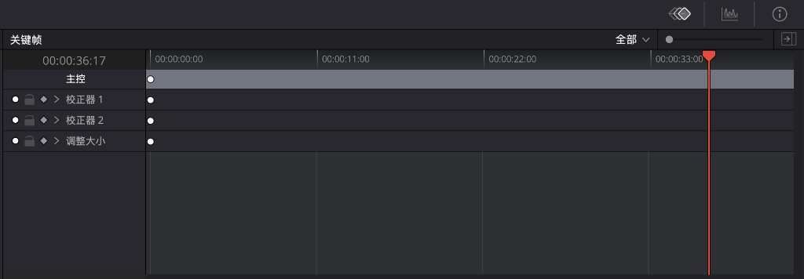
交付前检查清单
- 光箱：整场缩略图对白，挑锚点镜，粘贴同时段节点。
- 示波器：合法电平、肤色线、Parade 无异常偏轴。
- 快捷导出：出一条预览，在目标平台/监视器上再看（界面色 ≠ 成片色）。
速查表与避坑
把面板挂回「动线工位」上，而不是名词表
工作台五钮
快捷导出 / 时间线 / 节点 / 特效库 / 光箱
工位：全程 · 布局节点图
串行打底、并行纠偏；绿 RGB、蓝键
工位：结构特效库 · 运动特效 · 大小
修复/OCIO · 降噪 · reframing
工位：清理色彩匹配 · 一级校色
色卡匹配 · Offset/色温 · 吸管
工位：LUT 前立轴HDR 轮 · 自定义曲线
亮度分区塑光 · 精确影调/哑光
工位：影调限定器 · 窗口 · 跟踪 · 键
色选 · 形选 · 跟随 · 力度软边
工位：二级选区切片器 · 色度扭曲
色相列调 · 色度图搬色
工位：二级按色RGB 混合器 · 模糊 · 关键帧
通道关系 · 清晰度 · 时间动画
工位：质感 / 动态常见坑
- 技术 LUT 挂在第一节点，白平衡做在后面 → 显示域打补丁，高光色偏修不齐。
- 一级轮硬拧「亮暖暗冷」当风格 → 像错白平衡滤镜。
- 钢笔抠到像素级再调色 → 性价比极低；大窗口 + 柔化更常见。
- 提亮暗部人物却不保黑位 → 立刻发灰。
- LUT/Look 浓度拉满且无键输出控制 → 全局易脏；用键输出降浓度。
专业动线是：工作台就位 → 节点分工 → 清理 → LUT 前立轴 → 影调 → 二级分区 → 质感 → 动态 → 光箱统一与导出。面板都会用，不如每次只问：我现在在动线的哪一站？